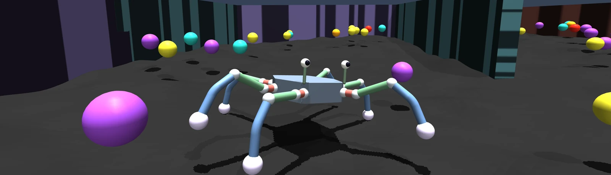
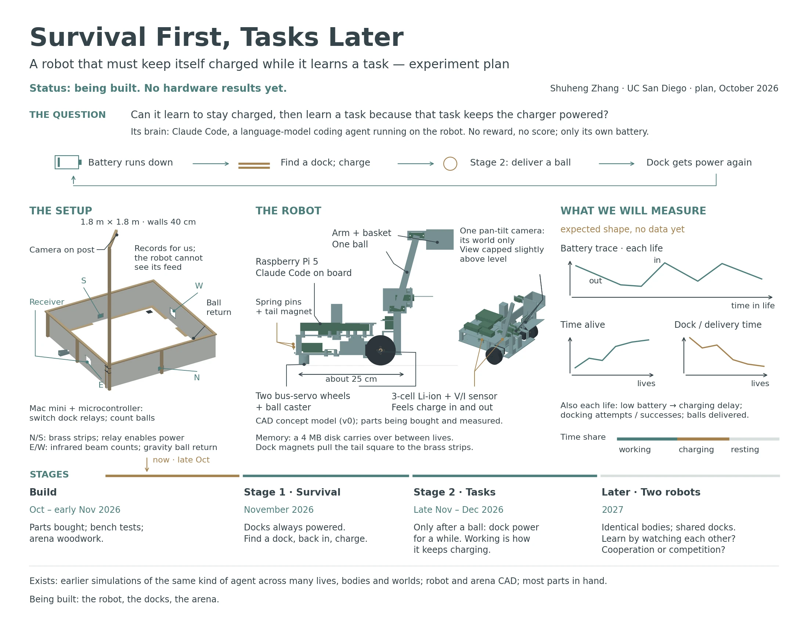

2026 – present · two experiments in simulation; a real robot being built
A language agent is handed a body it knows nothing about and one instruction: stay alive. There is no reward, no reinforcement learning and no fine-tuning. Whatever it learns, it must write down in a folder of its own; the folder outlives each life, and the next life starts from what the last one wrote. The question is whether experience compiles into files — and whether, given a body and nothing else to do, an agent organises itself around keeping that body going before anyone gives it a task.

A coding agent runs in a sealed container and reaches a simulated hexapod only over HTTP: twenty unlabeled channels (eighteen leg joints and two eyes) and a one-page datasheet. The battery drains all the time, faster when the legs work, and fruit scattered over the ground refills it. That the body has six legs, how to stand, how to walk and what fruit does are all things the agent has to find out by experiment. Its workspace has a storage limit, so what it keeps, it has to choose.
August – October 2026
The first experiment (August–September) ran five lineages for 197 lives, with the mind and the body frozen so that the workspace was the only thing that changed. Its best life lasted 308 minutes and ate 1,952 fruit. The second (from 22 September) made agents movable between worlds; one of them was later copied twice, the way a cell divides, so that three relatives could be compared and, later, put in one maze together. By 6 October its four agents had lived 454 lives — about 650 across both experiments. Lives in a lineage inherit one another's files, so these are not independent trials.
What the agents wrote for themselves, life by life: a tripod gait; odometry from the gyroscope; an explorer that walks toward the least-visited direction; a table of gait power, from which one agent cut its walking drain from about 304 to 166 W by lifting its legs less; a map and a program to retrace its own track, which the next life found still matched the world to two centimetres. The best life of the second experiment ate 353 fruit in 137 minutes.
In one life the language model ran out of tokens 55.9 minutes in, and every restart failed. The body went on foraging on the programs the agent had written: it had eaten 153 fruit with the model and ate 103 more without it, then starved at 121.3 minutes. With nothing above them, the programs left their own failures unhandled — which is the next question as much as the result.
Being built · no hardware results yet
The same question moves onto real hardware: a wheeled robot about 25 cm long, with one pan-tilt camera, a small arm and a basket, and the coding agent running on board. It lives in a 1.8 m wooden arena with two charging docks. First it has to learn to find a dock, back in and charge; only then comes a task — a dock gives power only after the robot has delivered a ball, so working becomes how it keeps charging. Two identical robots sharing the docks come later. Most parts are in hand; the robot, the docks and the arena are being built, and nothing has run yet.

Lives of the simulation can be replayed in the console at hexapod.shzhang.com (login required).